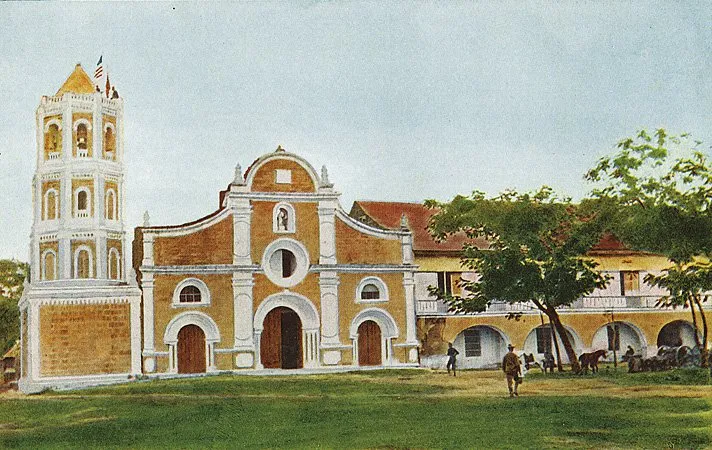

A province where history, culture, and nature beautifully converge

Bulacan is a landlocked province in Central Luzon (Region III), bordered by Nueva Ecija, Pampanga, Metro Manila, Rizal, and Aurora.
Known as the "Cradle of Philippine Democracy," Bulacan hosted the Malolos Congress of 1898, establishing the first Philippine Republic.
Barasoain Church, Biak-na-Bato National Park, Angat Dam, Malolos Cathedral, and the historic Malolos — the nation's first constitutional capital.
Bulaceños celebrate colorful fiestas, the Bocaue River Festival, and take pride in producing legendary Filipino painters, sculptors, and musicians.
Walk through the birthplace of Philippine democracy and explore centuries-old churches and revolutionary sites.
From the lush Biak-na-Bato caves to scenic river landscapes and rolling hills, nature lovers find paradise here.
Experience the genuine warmth of Bulaceños, known for their generosity, artistry, and love of celebration.